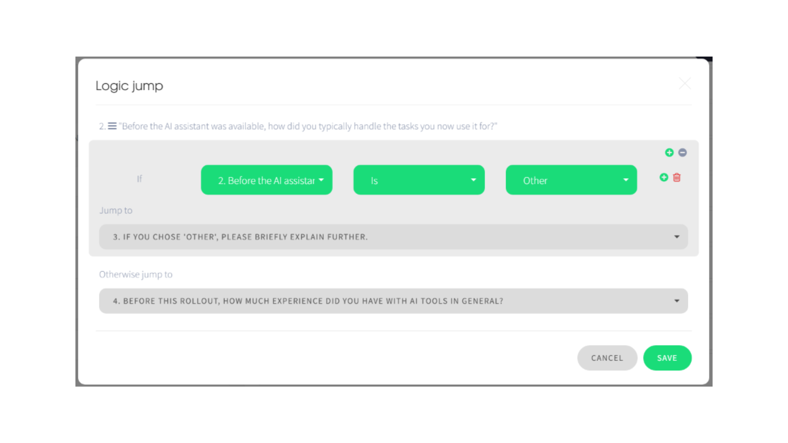
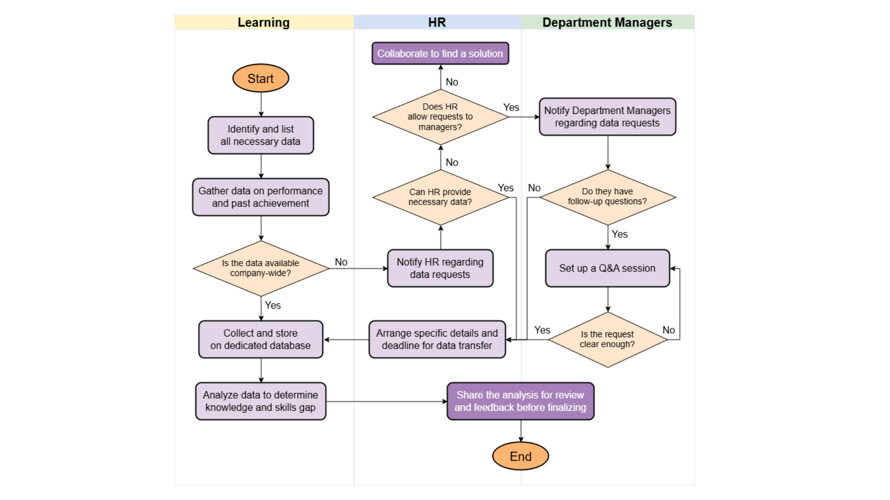

When performance falters, the common response is to conduct a training program. While it's easy to assume low performance means lack of knowledge and skills, is there a way to test that assumption? This case study uses Dr. Carl Binder's Six Boxes® Model to find root causes beyond just skill gaps as a learning strategist. It demonstrates how shifting the focus from only individual capacity to environmental and systemic support can improve performance.
A mid-size professional services firm (~2,000 employees) launched an enterprise AI assistant for everyone, along with a single onboarding webinar, to boost productivity. Current observations show a clear divide in tool use across teams and seniority levels. Some employees use the tool constantly, while others hardly use it. Among active users, the level of use varies greatly. Some find real value, while others only use the assistant for simple tasks. This uneven engagement raises compliance risks, as a few incidents of sensitive client data being pasted into prompts have triggered alerts from legal and compliance teams. The organization also lacks a formal feedback channel, which forces leadership to rely on raw usage data and scattered anecdotes. Navigating these changes involves several tough constraints. Employees have no dedicated time for training or exploration. Data security and governance requirements are strict and non-negotiable. Frequent feature updates mean the tool's capabilities are always changing, making any fixed training strategy ineffective. Meanwhile, leadership expects measurable progress and improvement in the next two quarters.
Before recommending training, the real task was to see if training was the right solution. I used the Six Boxes® Model to distinguish a skills gap from a systems problem. The model divides factors that affect performance into six areas: three environmental (expectations, tools, incentives) and three individual (skills, capacity, motives). Of all six, only one of the six can really be addressed by a training program. To learn more about Six Boxes® Model, you can watch the video below.
Laid out this way, the pattern is hard to miss. Five of the six are issues outside a training team's control:
Environment
Box 1
Box 2
Box 3
Individual
Box 4
Box 5
Box 6
Note: Pink items are negative behavior influences/obstacles.
This distinction changes what gets built next. A training program addresses issues around Skills and Knowledge, but does nothing for the other issues. Without these in place, even a well-designed course is unlikely to show measurable results in two quarters.
Each box raised specific follow-up questions and each question needed at least one action item and its owner. Mapping action items and ownership were as important as the diagnosis itself. It turned the findings into something that could be assigned to the proper team.
| # | Element | Question | Possible action(s) | Owner(s) |
|---|---|---|---|---|
| 1 | Expectations & Feedback | How can employees communicate feedback and needs about the rollout? |
|
Learning
IT
HR
|
| 2 | Tools & Resources | How do we keep employees compliant while they integrate AI into daily work? | Draft company guidelines on AI usage with legal and compliance teams |
Legal & Compliance
HR
Leadership
|
| 3 | Tools & Resources | What's actually in the onboarding webinar? | Audit the webinar's content and format against employee needs; adjust if it falls short (e.g., adding lessons about 4D Framework). |
Learning
|
| 4 | Consequences & Incentives | What would a successful rollout actually look like? | Define clear, measurable objectives with relevant stakeholders (i.e., leadership, HR, legal, etc) |
Leadership
HR
|
| 5 | Consequences & Incentives | Beyond productivity, what would motivate adoption? | Identify concrete incentives to share with employees (e.g. paid training hours). |
HR
Learning
|
| 6 | Skills & Knowledge | What did employees already know before AI integration? |
Gather past performance data by:
|
Learning
Team Managers
IT
|
| 7 | Skills & Knowledge | What did employees already do before AI integration? | ||
| 8 | Motives & Preferences | What do employees find difficult when using the AI assistant? | ||
| 9 | Selection & Assignment | What's the best way to roll this out without disrupting active workflows? |
|
Learning
Team Managers
HR
|
For Owner(s), grey color indicates "acknowledging/supervising" only. Scroll horizontally to see the full table on smaller screens.
Let's take a closer look. Row 6 to 8 are part of the table that is inherently within the Learning team's control, while the other rows are mainly owned by other departments, like Legal, HR, or Leadership. Below is what the survey and communication flow may look like in practice.
The survey is designed to be completed in under 5 minutes and includes questions about what employees already know, what they have done, and where they currently get stuck. This addresses the fact that the firm uses a billable hours format for employees, with no dedicated time for training. Additionally, the welcome screen clearly states that this is not a disguised performance review, given the compliance incidents on record at this firm. I also ensured that the survey only shows questions relevant to the employees. For example, on questions with the option "Other", employees will not see the "please specify" form unless they choose that option.

Next is the cross-departmental communication flow for data requests. Since "collaborate with HR and managers" doesn't specify who asks whom, in what order, or what happens if the answer is no, the flow below clarifies that.

It starts with the Learning team identifying its needs and checking what's already available before escalating the request. If that's not enough, the request goes to HR. If HR can't fulfill it, it moves to department managers. Each step respects the chain of command instead of sending the request directly to the relevant party. Importantly, there's a clarity check before any data is shared. Managers can flag unclear requests and start a short Q&A instead of guessing. If HR can't route the request to managers, it goes to a joint problem-solving step instead of staying still. The flow ends after the Learning team completes the analysis and reviews it with HR before finalizing anything.
A flowchart is only useful if it doesn't leave you stuck when the answer is "no”.
The urge to jump straight to "let's build training" was strong because it's the one thing Learning team can fully control. But doing the diagnostic first allowed me to show, with evidence, that training alone wouldn't solve the problem and to identify what else needed to happen first. For me, the action items and ownership mapping were the best part of the exercise. Naming what to do and who is responsible for each fix makes the diagnosis actionable. A manager reading this doesn't have to guess what they need to act on and what belongs to Learning. On top of that, tracking and measuring progress to see if the objectives are achieved become a lot easier.